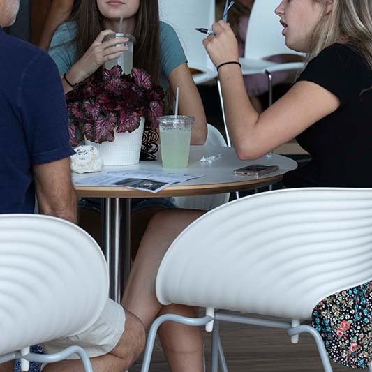
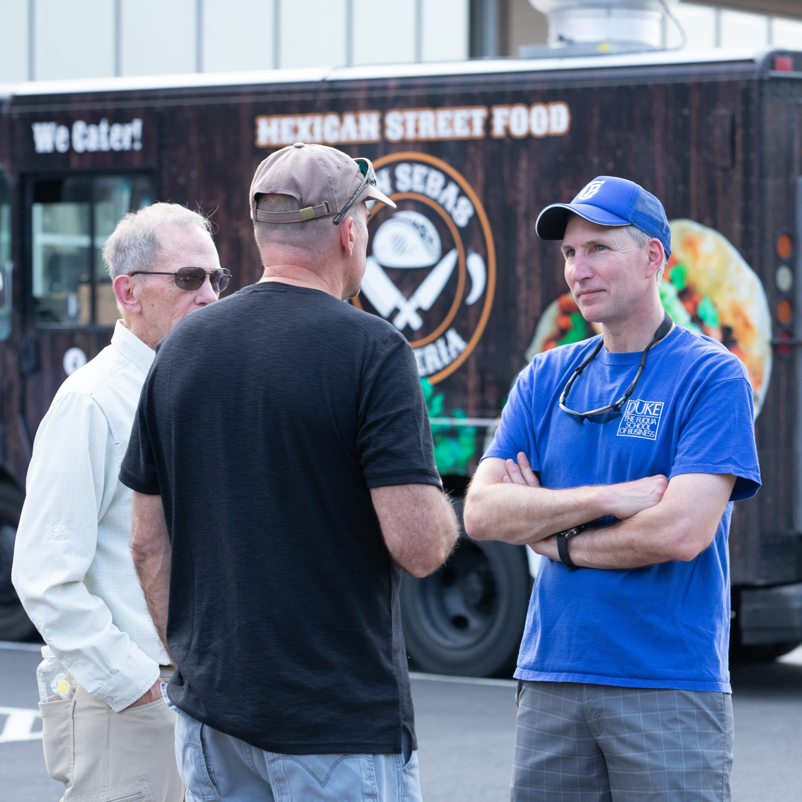

IMPORTANCE OF COMMUNITY
When we read about the early church in Acts 2:42-47, we see authentic biblical community. The people in the Early Church were not extraordinary, they simply knew that they loved Jesus and needed each other. Thousands of years later, we feel the same way here at CFC.
Whether you are an introvert or an extrovert, God wired you for community. At CFC, groups offer opportunities for genuine friendship, where you can grow as you study God's word together. That combination moves you to live out what you are learning together and put that knowledge into practice.
In community groups and small groups, we learn together, pray together, serve together, and have fun together. We remind each other of why God created us and His purpose for each of us here on earth.
Life is so much richer together. Discover groups at CFC!
What is Community? PDF Handout
